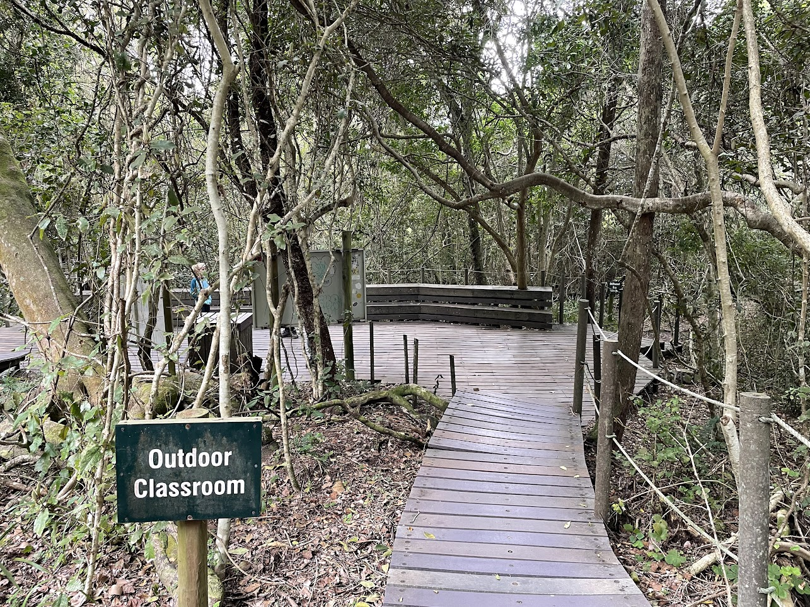
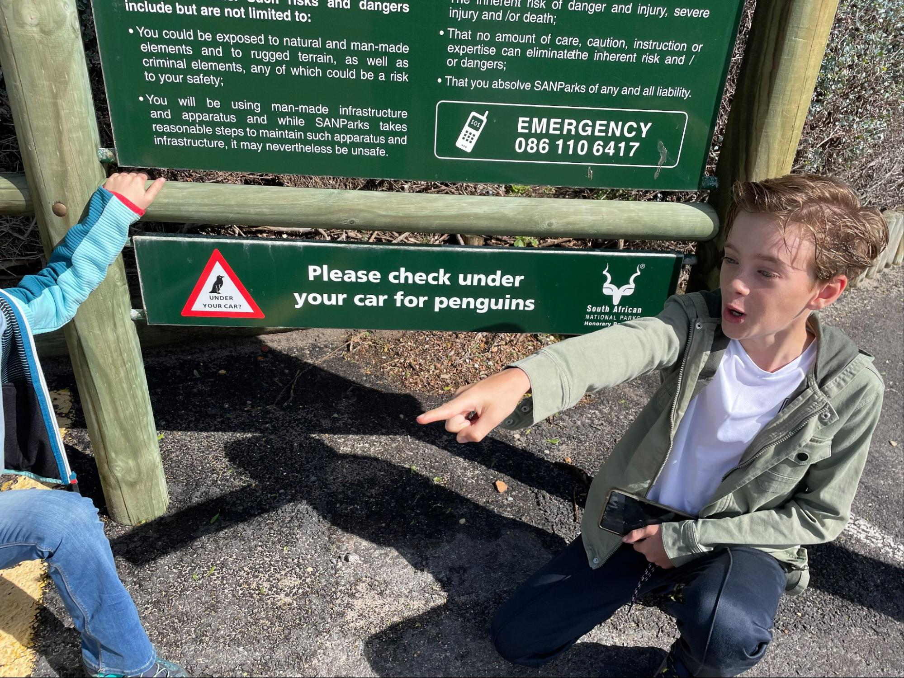
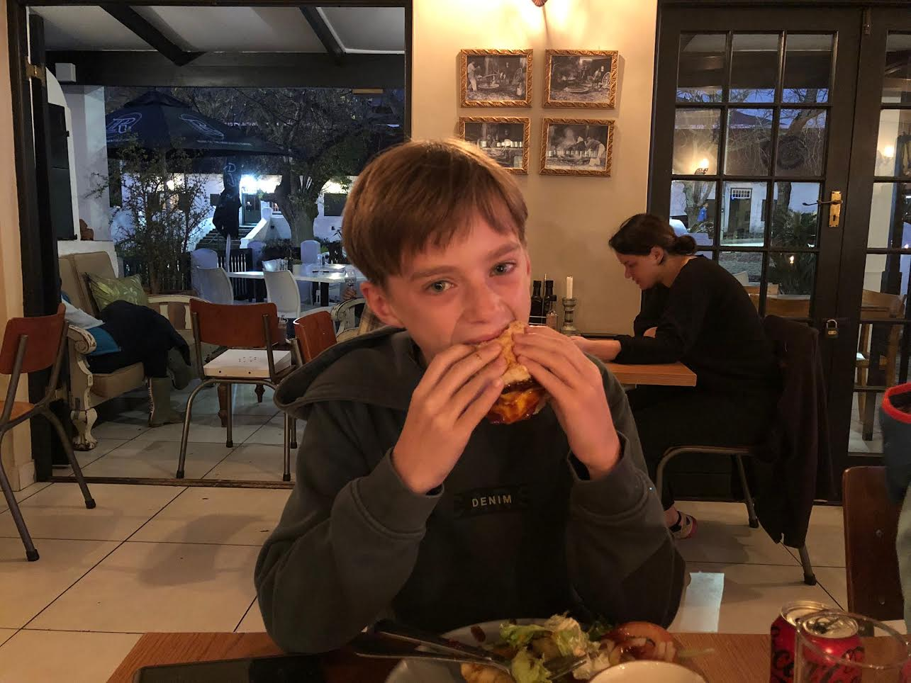

Where Do We Live?
We moved to Paarl, near Cape Town, in a safe gated community. It's never boring here with swimming pools, shops, and medical services.

The House
We live in a big villa in Val de Vie Estate. It has bedrooms, a large living room, an outdoor swimming pool, and a South African braai.
My School
I have to drive to school every morning and wear a uniform made of cotton, which is comfortable in the heat.
School Activities
We went on a hiking trip to the ocean and learned about the history and culture of South Africa.
Things We Did
- Table Mountain: We took the cable car to the top and enjoyed the view.
- Zeitz MOCAA: We loved the African art there.
- Kaap de Goede Hoop: It was very windy but beautiful.
- Boulders Beach: We saw penguins! 
- Cape Wheel: A 40-meter high wheel with amazing views.
- Almost Saw the Big Five: We saw lions, giraffes, elephants, and rhinos, but not the cheetah.
Where We Ate
The Best Burger
At The Dogs Bollocks, I had the best burger I've ever eaten!
Karibu Restaurant
Located near the water in Cape Town, I enjoyed a braai while my parents had soup and salad.
Events and Festivals
Rugby
Rugby is the most important sport in South Africa, and the Springboks are the national team.
Freedom Day
On April 27th, South Africa celebrates the first democratic elections.
Nelson Mandela Day
On July 18th, we honor Nelson Mandela, who ended apartheid in South Africa.